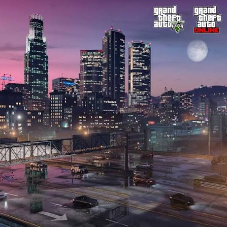
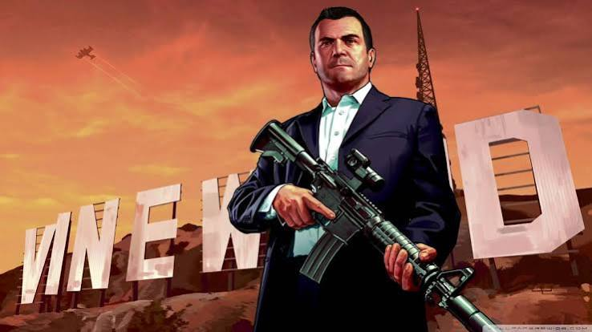
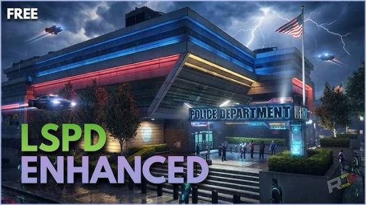
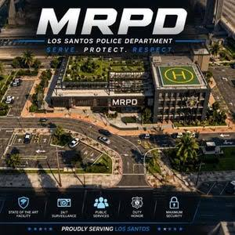
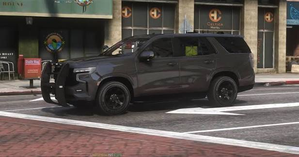
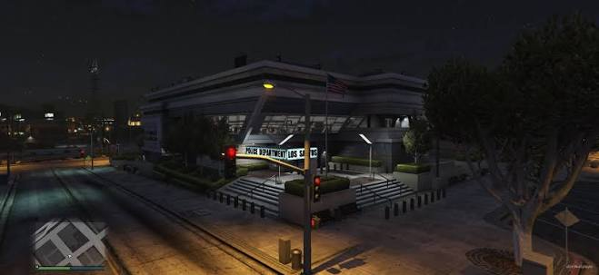
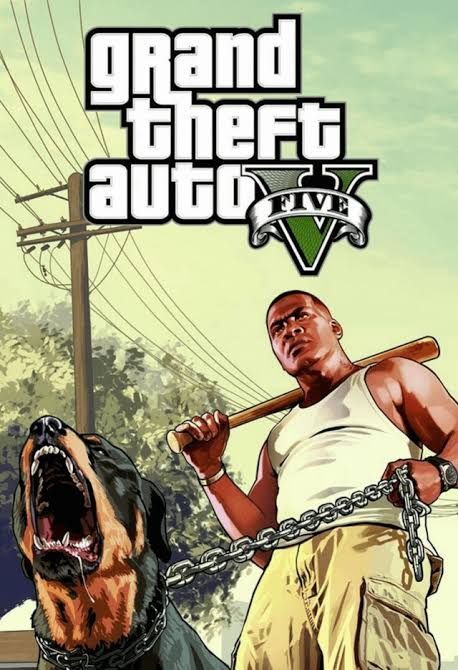
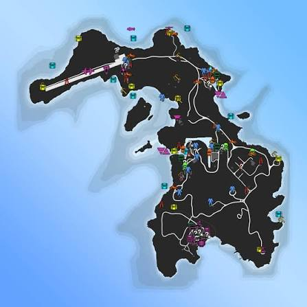
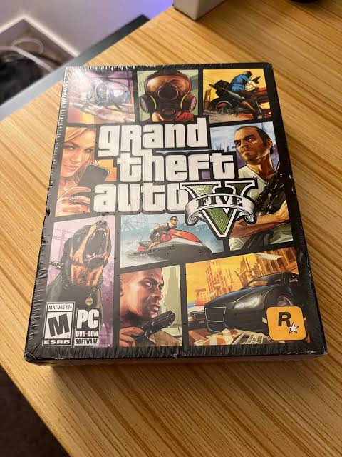
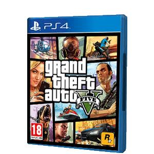

WELCOME TO LOS SANTOS
SANTAFE
PLAYA
Tu historia empieza donde termina la ley. Vive Los Santos a tu manera dentro de una comunidad GTA V Roleplay conectada por FiveM.

SANTAFE FILE05
ROCKFORD HILLSLOS SANTOS
01 // EL SERVIDOR
ESTO ES
SANTAFE.
Una puerta a Los Santos con identidad propia. Entra al Discord, conoce a la comunidad y construye tu personaje dentro del roleplay.
01
IDENTIDADCrea tu historia
Construye un personaje coherente y deja que sus decisiones tengan consecuencias.
02
COMUNIDADHaz equipo
Conoce jugadores, organiza escenas y consulta en Discord las facciones activas.
03
ROLEPLAYRespeta el entorno
La calidad de la experiencia depende del rol, el respeto y la creatividad de todos.

02 // LOS SANTOS POLICE DEPARTMENT
PROTEGE.
SIRVE.
ROLEA.
La estética policial forma parte del universo de Santafe Playa. Consulta en Discord los departamentos, convocatorias y requisitos que estén activos.
CONSULTAR EN DISCORD ↗


03 // PRIMEROS PASOS
DE CERO A
LOS SANTOS.
No necesitas saber programar. El punto de entrada de Santafe Playa es el Discord de la comunidad.
Únete
Entra al servidor de Discord y revisa los canales de bienvenida e información.
Abrir Discord ↗Prepárate
Lee las normas, crea tu personaje y consulta el proceso de acceso vigente.
Ver normas ↓Entra en juego
Cuando tengas los datos del servidor, abre FiveM y comienza tu historia en Los Santos.
Ir al acceso ↓04 // VISUAL ARCHIVE
THE LOS SANTOS
GALLERY.
Una colección visual GTA V y FiveM integrada directamente en la web de Santafe Playa.






05 // CÓDIGO DE LA CIUDAD
LAS CALLES
TIENEN REGLAS.
Resumen básico para empezar con buen pie. Las normas completas y cualquier actualización se consultan siempre en Discord.
RESPETO PRIMERO
Trata a los demás jugadores y al equipo con respeto dentro y fuera del personaje.
ROLEA LAS CONSECUENCIAS
Valora la vida del personaje y mantén coherencia con lo que ocurre en escena.
SIN METAGAMING
No uses dentro del rol información conseguida fuera del juego.
SIN POWERGAMING
No fuerces acciones imposibles ni quites a otros la oportunidad de responder.
06 // COMMUNITY ACCESS
¿LISTO PARA
ENTRAR?
Santafe Playa se organiza desde Discord. Ahí encontrarás la información actual del servidor, comunidad y acceso.
CONNECTION AVAILABLE
YOUR STORY
STARTS NOW.
Únete a Santafe Playa y da el primer paso hacia Los Santos.
ENTRAR A SANTAFE PLAYA DISCORD ↗discord.gg/z4BShMXrx